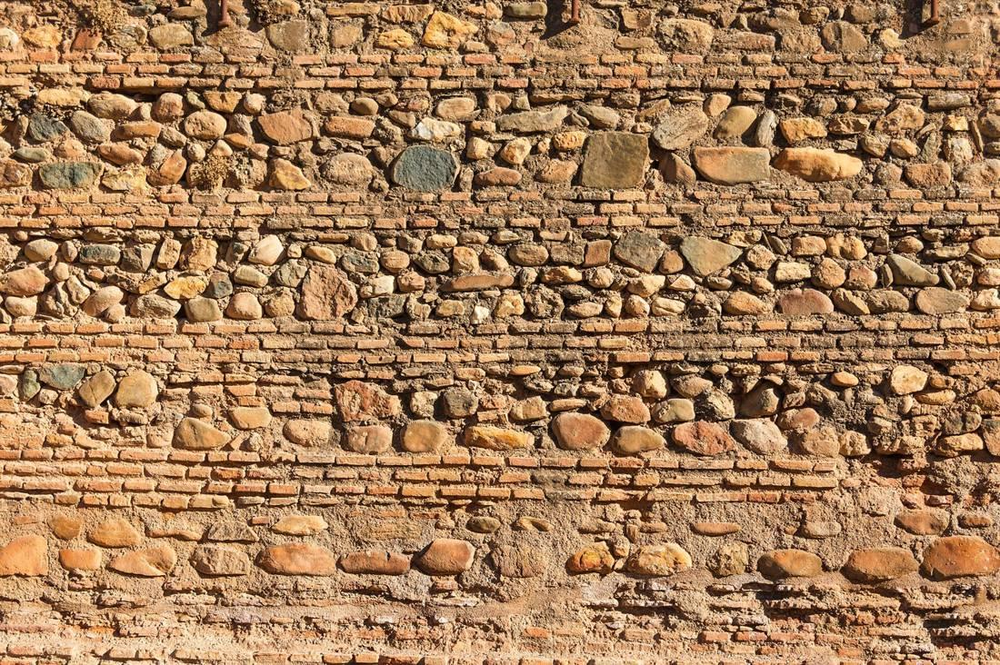
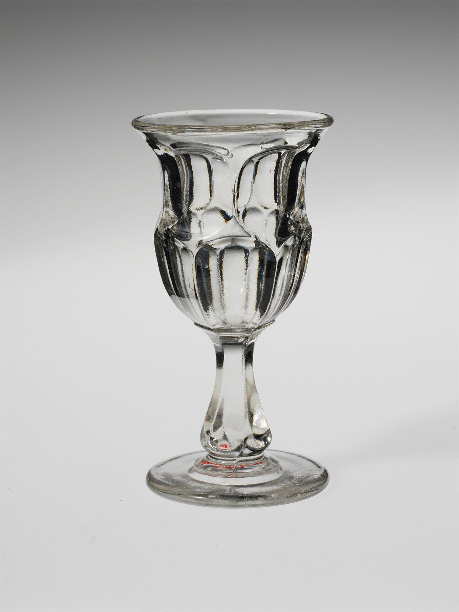

店のこと
アンテナの部位の配置図
お店の詳しい情報は準備中です。ここでは、制作側が考えたデザインの考え方を紹介します。


制作側の連想
番号は、部位の番号
ホームの図にある1〜6の番号は、それぞれアンテナの部位の名前に対応します。屋根の上のテレビ用アンテナ(棒を並べた形のもの)の部位を図にしたもので、制作側の連想です。お店の理念・由来とは無関係で、実際の製品の仕様を示すものでもありません。
1導波器
放射器より前に並ぶ、短めの棒の部分。電波の来る向きをそろえるはたらきがある。
2放射器
電波を受け取る中心の棒で、輪のように折り返した形のものも多い。
3反射器
放射器の後ろに置く、少し長めの棒の部分。後ろ側から来る電波を押し返す。
4ブーム
棒を並べて支える、一本の横軸の部分。棒の間隔を保つ役目もある。
5給電部
放射器の中央にある、同軸ケーブルをつなぐ部分。受けた信号をここから送り出す。
6マスト取付金具
ブームを支柱(マスト)に挟んで留める金具。向きを合わせてからボルトで締める。
写真(イメージ)
写真(イメージ)



写真はイメージです。お店のものではありません。